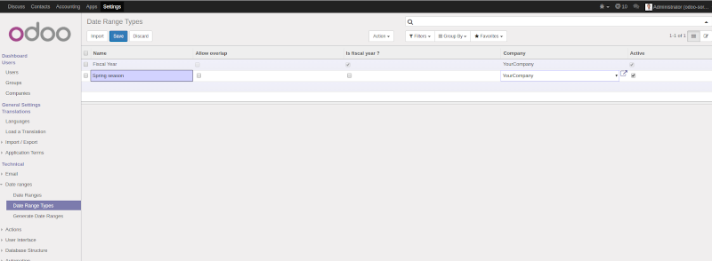
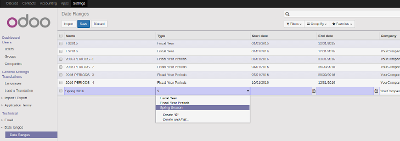
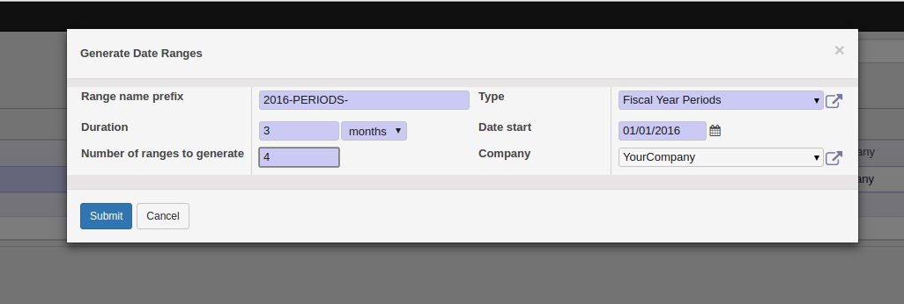
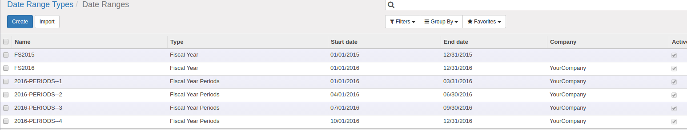

Manage all kind of date range / Impostazione intervallo date

This module lets you define global date ranges that can be used to filter your values in tree views.

Impostazione intervallo date
Questo modulo permette di definire intervalli di date.
Usage / Utilizzo
Usage / Uso
 Settings > Technical > Date ranges > Date Range Types where
you can create types of date ranges.
Settings > Technical > Date ranges > Date Range Types where
you can create types of date ranges.

Technical > Date ranges > Date Ranges where
you can create date ranges.

It's also possible to launch a wizard from the 'Generate Date Ranges' menu.

The wizard is useful to generate recurring periods.

Your date ranges are now available in the search filter for any date or datetime fields
Date range types are proposed as a filter operator

Once a type is selected, date ranges of this type are porposed as a filter value
.. figure:: https://raw.githubusercontent.com/OCA/server-tools/10.0/date_range/static/description/date_range_as_filter.png :alt: Date range as filter value
And the dates specified into the date range are used to filter your result.
.. figure:: https://raw.githubusercontent.com/OCA/server-tools/10.0/date_range/static/description/date_range_as_filter_result.png :alt: Date range as filter result